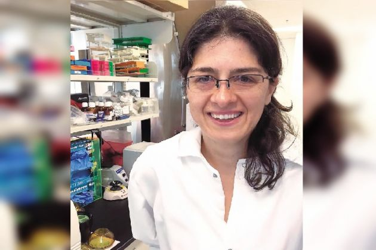

La colombiana que busca la vacuna contra el coronavirus

"Yo Confieso": Que el señor lo tenga en su gloria-Capítulo Cuatro
Cultura - 17 Abr 2020
¿Relajar el aislamiento para los niños?: debate con varias aristas
Judicial - Hace 4 horas
“No podemos aspirar a volver a tener fiestas masivas”: presidente Duque
Opinión - 17 Abr 2020
OPINIÓN
Famosos versus sabios
Antonio Muñoz Molina escribía hace unas semanas que esta terrible calamidad que estamos viviendo nos había servido al menos para reconocer la autoridad de las personas que saben. De aquellos que,...
Política - 18 Abr 2020
Alto turmequé: Curiosidades y hasta milagros de cuarentena
Alto Turmequé - 17 Abr 2020
No más coronavirus, mejor veamos las películas de Gabo: Pensamientos desde casa, día 26
Entretenimiento - Hace 3 horas
Bitácora de los secuestros del antiguo Bloque Sur de las Farc
Alto Turmequé - 17 Abr 2020
El baile de los que sobran: la población sándwich en la crisis del COVID-19
Economía - 18 Abr 2020
Falleció Germán Mendoza Diago, maestro del periodismo del Caribe colombiano